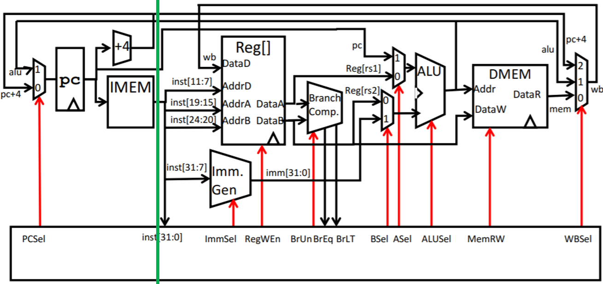

Part B: More Instructions
Lab 6 is required for Project 3B, and lectures 18-23, Discussions 7-8, and Homeworks 7-8 are highly recommended.
In this part, you will expand your CPU to support more instructions and pipelining.
Before starting this part, please run git pull starter main to download any changes we may have pushed. If you see an error about "unrelated histories" run git fetch starter main-fix && git merge starter/main-fix instead.
You can implement the instructions in any order you want. This spec is organized to build up your CPU with small groups of instructions at a time.
Note: Your circuit may not rely on floating (undefined) values. While tests may pass locally, it will violate design rule checks on Gradescope.
Task 5: I-type Instructions
The instructions you need to implement for this task are listed below:
| Instruction | Type | Opcode | Funct3 | Funct7 | Operation |
addi rd, rs1, imm |
I | 0x13 |
0x0 |
rd = rs1 + imm |
|
andi rd, rs1, imm |
0x7 |
rd = rs1 & imm |
|||
ori rd, rs1, imm |
0x6 |
rd = rs1 | imm |
|||
xori rd, rs1, imm |
0x4 |
rd = rs1 ^ imm |
|||
slli rd, rs1, imm |
I* | 0x1 |
0x00 |
rd = rs1 << imm |
|
srli rd, rs1, imm |
0x5 |
0x00 |
rd = rs1 >> imm (Zero-extend) |
||
srai rd, rs1, imm |
0x5 |
0x20 |
rd = rs1 >> imm (Sign-extend) |
||
slti rd, rs1, imm |
I | 0x2 |
rd = (rs1 < imm) ? 1 : 0 |
Task 5.1: Datapath
Recall that you already implemented addi in Part A. Other I-type instructions use the same datapath as addi, except that each I-type instruction needs the ALU to perform a different operation. In Part A, we hard-coded the ALUSel input to the ALU subcircuit to be 0b0000 so that the ALU always performs the addition selection, but now you should change ALUSel input to the ALU subcircuit to use the value from the control logic subcircuit (which you'll implement in the next task).
Remember to also change the RegWEn input to the regfile subcircuit to use the value from the control logic subcircuit.
Task 5.2: Control Logic
As you add logic to support more instructions in the next few tasks, you will need to add control logic to enable the relevant datapath components depending on the instruction being executed.
Modify control-logic.circ to output the correct control logic signals for I-type instructions. See the control logic section for more details.
Testing and Debugging
We don't have any provided tests for I-type instructions, so you'll need to write your own tests to find bugs in your implementation. Before requesting help from staff, please make sure you have some tests written, or we'll ask you to write some tests first before helping you.
- Navigate to
tests/integration-custom/in. - Write a RISC-V test and save it in a filename ending in
.s. - Run
bash test.sh test_custom.
test_custom compiles your RISC-V test code to a Logisim circuit and runs it. If you want to only compile your test, run bash test.sh create_custom. If you want to only run your test, run bash test.sh run_custom.
To debug your circuits, you can step through the debugging circuits (similar to what you did in Project 3A).
- Navigate to the
testsfolder, then navigate to the folder of the relevant test, e.g.tests/integration-custom. - Open the generated
.circfile in Logisim. Click into the circuits you made, and tick full cycles to step through inputs.
Task 6: R-type Instructions
The instructions you need to implement for this task are listed below:
| Instruction | Type | Opcode | Funct3 | Funct7 | Operation |
add rd, rs1, rs2 |
R | 0x33 |
0x0 |
0x00 |
rd = rs1 + rs2 |
sub rd, rs1, rs2 |
0x0 |
0x20 |
rd = rs1 - rs2 |
||
and rd, rs1, rs2 |
0x7 |
0x00 |
rd = rs1 & rs2 |
||
or rd, rs1, rs2 |
0x6 |
0x00 |
rd = rs1 | rs2 |
||
xor rd, rs1, rs2 |
0x4 |
0x00 |
rd = rs1 ^ rs2 |
||
sll rd, rs1, rs2 |
0x1 |
0x00 |
rd = rs1 << rs2 |
||
srl rd, rs1, rs2 |
0x5 |
0x00 |
rd = rs1 >> rs2 (Zero-extend) |
||
sra rd, rs1, rs2 |
0x5 |
0x20 |
rd = rs1 >> rs2 (Sign-extend) |
||
slt rd, rs1, rs2 |
0x2 |
0x00 |
rd = (rs1 < rs2) ? 1 : 0 |
||
mul rd, rs1, rs2 |
0x0 |
0x01 |
rd = (rs1 * rs2)[31:0] |
||
mulh rd, rs1, rs2 |
0x1 |
0x01 |
rd = (rs1 * rs2)[63:32] (Signed) |
||
mulhu rd, rs1, rs2 |
0x3 |
0x01 |
rd = (rs1 * rs2)[63:32] (Unsigned) |
Task 6.1: Datapath
Modify your datapath in cpu.circ so that it can support R-type instructions.
If you're stuck, read further for some guiding questions. As with Task 4, it may help to think about each of the five stages for executing an instruction.
Instruction Fetch: How do R-type instructions affect the program counter?
R-type instructions always increment the program counter by 4 to fetch the next instruction, just like the addi instruction from Part A. This means we don't need to modify the program counter implementation for this task.
Instruction Decode: What do we need to read from the register file?
R-type instructions require reading the values of two source registers (rs1 and rs2) from the register file. In Part A, you split the rs1 bits from the instruction and passed them to the regfile. Now, you should also split the rs2 bits from the instruction and pass them to the regfile.
Execute: What two data values (A and B) should an R-type instruction input to the ALU?
R-type instructions pass the register values from the regfile into the ALU. In Part A, you already passed the first register value RegReadData1 into the first input of the ALU. However, for the addi instruction, the second input of the ALU is an immediate. Since you want to support both R-type instructions and the addi instruction, you should use a multiplexer to select which input will be inputted to the ALU.
The select bit of this multiplexer is BSel. You will implement the logic for determining BSel from the instruction bits in the control logic later in this task.
Memory: Do R-type instructions write to memory?
R-type instructions do not write to memory (they write to a register on the CPU, which is different from memory). This means we don't need to modify DMEM for this task.
Write back: What data is the R-type instruction writing, and where is the instruction writing this data to?
R-type instructions take the result of the computation (from the ALU output) and write the result to the register rd. In Part A, you already implemented logic to write the ALU output into a destination register.
Task 6.2: Control Logic
Modify control-logic.circ to output the correct control logic signals for R-type instructions. See the control logic section for more details.
Testing and Debugging
We don't have any provided tests for R-type instructions, so you'll need to write your own tests to find bugs in your implementation. Before requesting help from staff, please make sure you have some tests written, or we'll ask you to write some tests first before helping you.
- Navigate to
tests/integration-custom/in. - Write a RISC-V test and save it in a filename ending in
.s. - Run
bash test.sh test_custom.
Task 7: B-type Instructions
The instructions you need to implement for this task are listed below:
| Instruction | Type | Opcode | Funct3 | Operation |
beq rs1, rs2, offset |
B | 0x63 |
0x0 |
if(rs1 == rs2)
|
bge rs1, rs2, offset |
0x5 |
if(rs1 >= rs2 (signed))
|
||
bgeu rs1, rs2, offset |
0x7 |
if(rs1 >= rs2 (unsigned))
|
||
blt rs1, rs2, offset |
0x4 |
if(rs1 < rs2 (signed))
|
||
bltu rs1, rs2, offset |
0x6 |
if(rs1 < rs2 (unsigned))
|
||
bne rs1, rs2, offset |
0x1 |
if(rs1 != rs2)
|
Task 7.1: Branch Comparator
Fill in the branch comparator subcircuit in branch-comp.circ. This subcircuit takes two inputs and outputs the result of comparing the two inputs. We will use the output later for implementing branches.
| Signal Name | Direction | Bit Width | Description |
|---|---|---|---|
BrData1 | Input | 32 | First value to compare |
BrData2 | Input | 32 | Second value to compare |
BrUn | Input | 1 | 1 when an unsigned comparison is wanted, and 0 when a signed comparison is wanted |
BrEq | Output | 1 | Set to 1 if the two values are equal |
BrLt | Output | 1 | Set to 1 if the value in rs1 is less than the value in rs2 |
We've provided some unit tests for the branch comparator subcircuit. These are not comprehensive. You can run these tests with bash test.sh test_branch_comp.
Task 7.2: Immediate Generator
Edit the immediate generator in imm-gen.circ so that it can generate immediates for B-type instructions in addition to immediates for I-type instructions (which you implemented in Part A).
Recall that the bits of the immediate are stored in different bits of the instruction, depending on the type of the instruction. The ImmSel signal, which you will implement in the control logic, will determine which type of immediate this subcircuit should generate.
The immediate storage formats are listed below:
| Type |
ImmSel (default) |
Bits 31-20 | Bits 19-12 | Bit 11 | Bits 10-5 | Bits 4-1 | Bit 0 |
|---|---|---|---|---|---|---|---|
| I | 0b000 |
inst[31] |
inst[30:20] |
||||
| S | 0b001 |
inst[31] |
inst[30:25] |
inst[11:7] |
|||
| B | 0b010 |
inst[31] |
inst[7] |
inst[30:25] |
inst[11:8] |
0 |
|
| U | 0b011 |
inst[31:12] |
0 |
||||
| J |
0b100 |
inst[31] |
inst[19:12] |
inst[20] |
inst[30:21] |
0 |
|
For this project, you may treat I*-type immediates as I-type immediates, since the ALU should only use the lowest 5 bits of the B input when computing shifts.
Recall that all immediates are 32 bits and sign-extended. (Sign extension is shown in the table as inst[31] repeated in the upper bits.)
We've provided some unit tests for the immediate generator subcircuit. These are not comprehensive. You can run these tests with bash test.sh test_imm_gen.
Note that if you only implement generating B-type immediates now, some tests for other immediate types will fail, but make sure that the imm-gen-b-type test passes.
The ImmSel values in the table represent the default encoding (mapping of ImmSel values to immediate types). If you choose to use a different encoding:
- Navigate to
tests/unit-imm-gen. - Open
imm-gen-encoding.csv. - Replace the numbers with your selected encoding (in decimal). For example, if you're using
ImmSel = 0b110to denote an I-type instruction, the second line should sayI,6. - Run the unit tests with
bash test.sh test_imm_gen.
Task 7.3: Datapath
Modify your datapath in cpu.circ so that it can support B-type instructions.
If you're stuck, read further for some guiding questions. As with Task 4, it may help to think about each of the five stages for executing an instruction.
Instruction Fetch: How do B-type instructions affect the program counter?
Recall that branching instructions add an immediate to the current value of PC. If the branch is taken, the PC changes to be the result of this addition. If the branch is not taken, or the instruction is not an B-type instruction, then PC changes to PC+4 (just like in the previous tasks). We will implement this in the write-back stage.
Instruction Decode: What do we need to read from the register file?
B-type instructions have two source registers, rs1 and rs2, that we need to read from the register file. In the previous task, you already implemented reading the values in rs1 and rs2 for R-type instructions.
Execute: What two data values (A and B) should an B-type instruction input to the ALU?
B-type instructions use the ALU to add an immediate to PC. You will need to add a multiplexer so that the ALU can receive either PC or the value in rs1, depending on the instruction being executed. The select bit of this multiplexer is ASel. In the previous tasks, you already implemented sending an immediate to the ALU.
Memory: Do B-type instructions write to memory?
B-type instructions do not write to memory. This means we don't need to modify DMEM for this task.
Write back: What data is the B-type instruction writing, and where is the instruction writing this data to?
B-type instructions take the result of the addition (PC + immediate, from the ALU output) and might write the result to PC (depending on if the branch is taken). You should use a multiplexer to select which value will be written to PC.
The select bit of this multiplexer is PCSel. You will implement the logic for determining PCSel from the instruction bits in the control logic.
Task 7.4: Control Logic
Modify control-logic.circ to output the correct control logic signals for B-type instructions. See the control logic section for more details.
Testing and Debugging
We have provided some tests for B-type instructions. You can run them with:
These tests are not comprehensive, so you should write your own tests to find bugs in your implementation.
- Navigate to
tests/integration-custom/in. - Write a RISC-V test and save it in a filename ending in
.s. - Run
bash test.sh test_custom.
Task 8: Loading and Storing
The instructions you need to implement for this task are listed below:
| Instruction | Type | Opcode | Funct3 | Operation |
lb rd, offset(rs1) |
I | 0x03 |
0x0 |
rd = 1 byte of memory at address rs1 + imm, sign-extended |
lh rd, offset(rs1) |
0x1 |
rd = 2 bytes of memory starting at address rs1 + imm, sign-extended |
||
lw rd, offset(rs1) |
0x2 |
rd = 4 bytes of memory starting at address rs1 + imm |
||
sb rs2, offset(rs1) |
S | 0x23 |
0x0 |
Stores least-significant byte of rs2 at the address rs1 + imm in memory |
sh rs2, offset(rs1) |
0x1 |
Stores the 2 least-significant bytes of rs2 starting at the address rs1 + imm in memory |
||
sw rs2, offset(rs1) |
0x2 |
Stores rs2 starting at the address rs1 + imm in memory |
Task 8.1: Immediate Generator
Edit the immediate generator in imm-gen.circ so that it can generate immediates for S-type instructions in addition to all the instruction types from previous tasks. See the earlier immediate generator task for details.
We've provided some unit tests for the immediate generator subcircuit. These are not comprehensive. You can run these tests with bash test.sh test_imm_gen.
Note that if you only implement generating S-type immediates now, some tests for other immediate types will fail, but make sure that the imm-gen-s-type test passes.
Task 8.2: Partial Loads and Stores
See Partial Loads and Stores to implement this task.
Task 8.3: Datapath
With the help of the partial load and partial store circuits you've just made, modify your datapath in cpu.circ so that it can support loads and stores.
You should provide an address input MemAddress to DMEM. Remember that the ALU calculates this address by adding the address in rs1 and the offset immediate.
You should also provide MemWriteMask and MemWriteData to DMEM. These are calculated by your partial load and partial store subcircuits.
For load instructions, you should also add functionality in the write-back stage so that the DMEM output data, processed by your partial load subcircuit, is written back to the rd register.
Task 8.4: Control Logic
Modify control-logic.circ to output the correct control logic signals for loads and stores. See the control logic section for more details.
Testing and Debugging
You'll need to write your own tests to find bugs in your implementation. Before requesting help from staff, please make sure you have some tests written, or we'll ask you to write some tests first before helping you.
- Navigate to
tests/integration-custom/in. - Write a RISC-V test and save it in a filename ending in
.s. - Run
bash test.sh test_custom.
We have provided some tests for load and store instructions, but they require lui to be implemented first. You can run them with:
Task 9: Jumps and U-type Instructions
The instructions you need to implement for this task are listed below:
| Instruction | Type | Opcode | Funct3 | Operation |
jal rd, imm |
J | 0x6f |
rd = PC + 4
|
|
jalr rd, rs1, imm |
I | 0x67 |
0x0 |
rd = PC + 4
|
auipc rd, imm |
U | 0x17 |
rd = PC + imm |
|
lui rd, imm |
0x37 |
rd = imm |
Task 9.1: Immediate Generator
Edit the immediate generator in imm-gen.circ so that it can generate immediates for U-type instructions and J-type instructions. See the earlier immediate generator task for details.
We've provided some unit tests for the immediate generator subcircuit. These are not comprehensive. You can run these tests with bash test.sh test_imm_gen.
Task 9.2: Datapath
Modify your datapath in cpu.circ so that it can support these instructions. Most of these instructions are already supported by your datapath so far.
Note that the U-type instructions require left-shifting the immediate by 12 bits (e.g. lui is written as rd = imm << 12 on the reference card), but this should already be done by your immediate generator, so your datapath doesn't need to perform any extra shifting.
To support jalr, you should connect PC+4 to your multiplexer in the write-back stage so that PC+4 can be written back to rd.
Task 9.3: Control Logic
Modify control-logic.circ to output the correct control logic signals for jumps and U-type instructions. See the control logic section for more details.
Hint: Be careful about which ALU operation you're performing for the lui instruction. One of the ALU operations you made in Part A but didn't use anywhere else will come in handy here.
Testing and Debugging
We have provided some tests for jump instructions and lui (but not auipc). You can run them with:
These tests are not comprehensive, so you should write your own tests to find bugs in your implementation.
- Navigate to
tests/integration-custom/in. - Write a RISC-V test and save it in a filename ending in
.s. - Run
bash test.sh test_custom.
Task 10: Pipelining
In this task, you will implement a 2-stage pipeline in your CPU:
- Instruction Fetch: An instruction is fetched from the instruction memory.
- Execute: The instruction is decoded, executed, and committed (written back). This is a combination of the remaining four stages of a classic five-stage RISC-V pipeline (ID, EX, MEM and WB).
The separation between the two pipeline stages (highlighted by the green dividing line on the datapath) is illustrated below.

Task 10.1: Getting Started
To get started, first think about which paths will have intermediate pipeline registers in them. Look at the provided illustration above and consider all the paths that intersect the dividing line. Paths that transfer data to the rest of the datapath (data going from left to right) will have corresponding pipeline registers in them, while feedback paths (data going from right to left) will not.
Think about which values are now different between the two stages of the pipeline. For example, will stage 1 and stage 2 have the same or different PC values? If the stages need different PCs, then you now need two different PC values in your circuit at any given time step.
Once you've listed out which values are different between the stages (hint: there aren't many), you'll need to store those values between the pipelining stages.
Finally, go through your entire circuit and make sure that you specify which stage's value you want to use for any values that are different between stages. For example, if the stages need different PCs, then any time you use PC in your circuit, you should specify whether you want to use the stage 1 PC, or the stage 2 PC.
Note: During the first cycle, the instruction register sitting between the pipeline stages won't contain an instruction loaded from memory. What should the second stage do? Luckily, Logisim automatically sets registers to zero on reset, so the instruction pipeline register will automatically start with a no-op! If you wish, you can depend on this behavior of Logisim.
Task 10.2: Hazards
Since your CPU will support branch and jump instructions, you'll need to handle control hazards that occur when branching.
The instruction immediately after a branch or jump should not be executed if a branch is taken. By the time you send a branch/jump instruction into stage 2, stage 1 has already fetched (possibly) the wrong next instruction. Therefore, you will need to flush the instruction fetched in stage 1 by replacing it with a no-op. You should flush the stage 1 instruction only if a branch is taken in the stage 2 instruction (do not flush if it is not taken). You should always flush the stage 1 instruction when the stage 2 instruction is a jump.
Hint: One of the control logic signals will tell you whether a branch or a jump is taken. You can use this control logic signal (from stage 2) in your stage 1 logic to determine when you need to flush the pipeline.
To flush an instruction, your stage 1 logic should send a no-op instruction into stage 2 instead of using the fetched instruction. You can use addi x0, x0, 0 (0x00000013) as a no-op.
Some more things to consider:
- To MUX a no-op into stage 2, do you place it before or after the instruction register?
- What address should be requested next while the EX stage executes a no-op? Is this different than normal?
Testing and Debugging
Add the --pipelined or -p flag to the testing commands to run the tests from the previous tasks on your pipelined CPU. For example:
Note that your pipelined CPU will no longer pass the non-pipelined tests (i.e. if you run tests without -p, they'll fail).
Task 11: Partner/Feedback Form
Congratulations on finishing the project! We'd love to hear your feedback on what can be improved for future semesters.
Please fill out this short form, where you can offer your thoughts on the project and (if applicable) your partnership. Any feedback you provide won't affect your grade, so feel free to be honest and constructive.
Submission and Grading
Submit your assignment to the Project 3B submission on Gradescope. Part B is worth 80% of your overall Project 3 grade.
- Instructions (1.5 points each, 54 points total)
- Integration tests (2 points each, 24 points total)
- Feedback form (2 points)
Total: 80 points